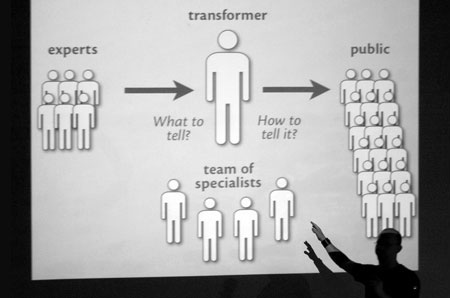
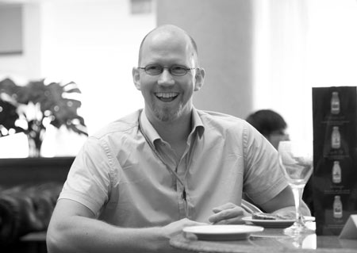

Information design workshop
The symposium will be preceded with a three-day workshop (4–6 September) by an excellent Finnish information designer and researcher Jasso Lamberg. The main language of the workshop will be English.

Registration
Registration fee: 185 EUR / 4700 CZK
The registration is now over
Reserve your place via email and we will provide you with payment options.
Graphics in Focus: Communicating news and information visually
Information graphics have become cool. The internet is blossoming with blogs and other sites dedicated to visually mesmerising graphics. Unfortunately, often the visuals win over clear communication. Fancy graphics can be like blurry photographs: they might be artistic but information is lost in them. This workshop concentrates on keeping the graphics “in focus”, clear and communicative. The starting point is the information, not the visual. Once you learn to handle the information properly, only then should you give it a stunning design. This is essentially the core of information design.
The workshop will offer an overview of the theories and literature of information graphics and hands-on project. It will teach skills essential for working with information graphics. These skills include not just using the graphics software but also understanding and handling the data as well as interacting with the experts who provide it.

Lecturer: Jasso Lamberg
Mr. Jasso Lamberg is a PhD researcher at the Department of Typography & Graphic Communication in the University of Reading (UK). He also holds a BA in graphic design, and a MA in design theory. He has taught theory and history of visual communication at design universities in Finland for the past six years. Previously he worked several years in the newspaper industry in Finland, producing information graphics, for example, for the Finnish News Agency and Helsingin Sanomat which is one of the largest quality papers in Scandinavia. He continues working as a freelance consultant helping newspapers redesign their information graphics. Currently he resides in Munich, Germany.
Skills required
Average or proficient skills in using Adobe Illustrator or similar vector-based drawing application.
Additional skills
Basic or better skills in using general tools such as text editors and Excel or other spreadsheet programs are useful.
Language
The main language of the workshop will be English.
Dates & venue
4–6 September 2013. The venue is to be announced.
Day 1
- Overview of topic and literature.
- Learning to judge graphics, good and bad examples.
- Tips on using Illustrator for information graphics, part 1.
- Working with scientists and other experts.
- Understanding the data.
- Hands-on: Basic skills, small graphics, meeting deadlines.
Day 2
- Information graphics – the theory, how useful is it?
- Tips on using Illustrator for information graphics, part 2.
- Collaborating with journalists & other media professionals.
- Handling the data.
- Hands-on: Advanced graphics, combining different types of graphics.
- Critique and discussion.
- Preparing for a larger hands-on project.
Day 3
- Tips on using Illustrator for information graphics, part 3.
- Collaborating with other designers, teamwork.
- Hands-on: Managing complex information and larger graphics.
- Critique and discussion.
Design © TypeTalks, 2010–13.
Content © Respective speakers, 2010–13.